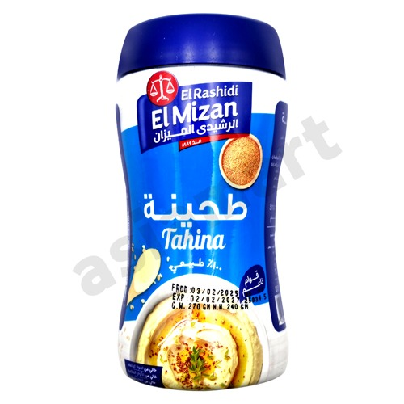
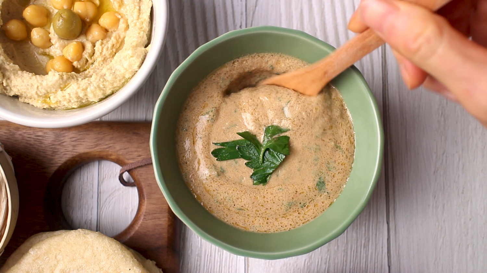
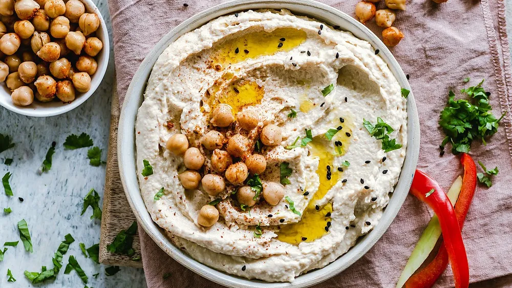
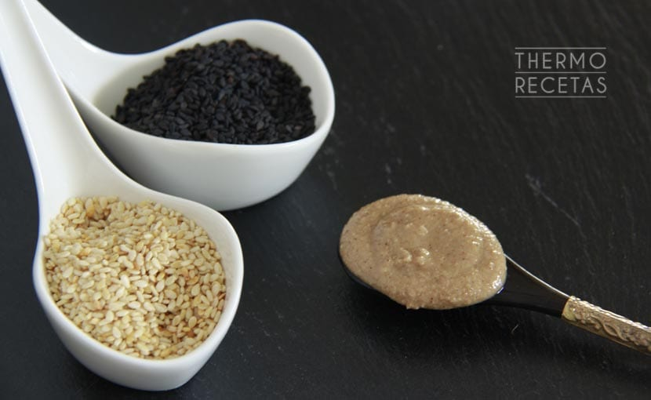
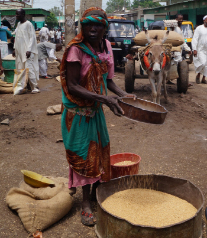
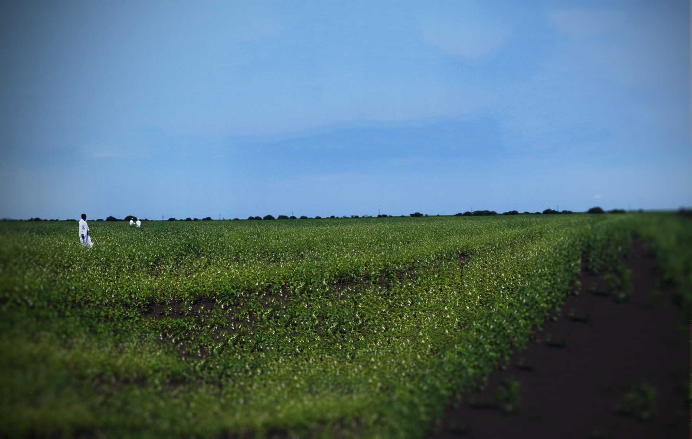
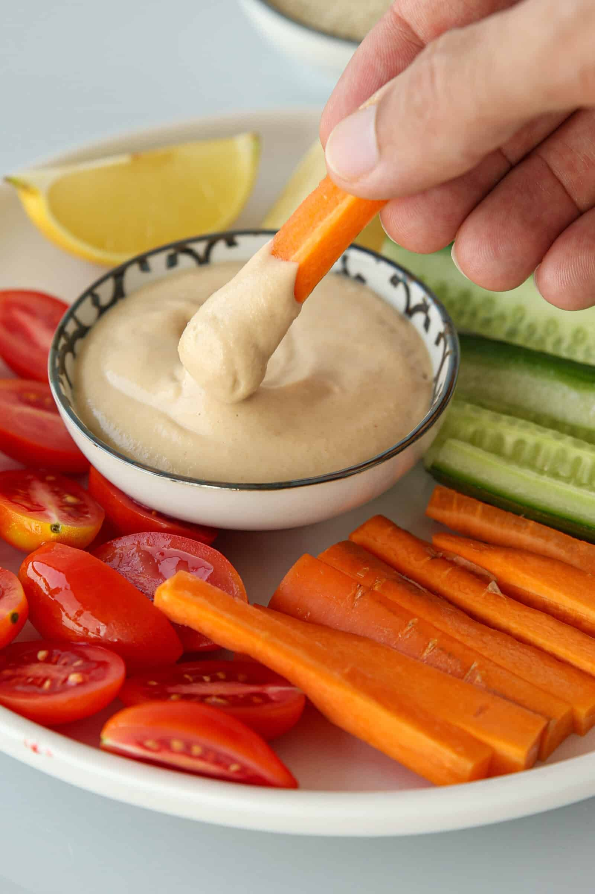

타히니(Tahini).
서아시아, 북아프리카, 중동 및 발칸반도 일대의 국가에서 먹는 소스의 일종.

음식 좀 먹는 사람이라면 익숙할 후무스에 들어가는 중요 조미료 중 하나기도 하다.
이 소스의 맛은 한국인이라면 싫어할 수 없는 맛을 가지고 있는데, 그 이유는 재료에 있다.

기본적으로 참깨 혹은 볶은 참깨에 기름과 소금을 넣고 갈아서 만든 소스이기 때문이다.
적절하게 짭짤한 맛을 가진 참깨향과 지방기를 가진 녹진한 소스를 한국인이 싫어하기는 힘들다.

사실 참깨의 최초 재배지역은 인도 혹은 북아프리카로 추정되기에 지금도 그 지역에서는 엄청나게 많은 양의 참깨를 생산하고 있다.
인도와 미얀마는 전세계 참깨 생산량의 34%정도를 책임지고 있다.
식객에서 나오는 수단 참깨도 수단이 세계 2위의 참깨 생산국이라는 점을 들어서 알 수 있다.
당연한 이야기지만 수단 참깨라고 모두 품질이 나쁜게 아니다.
몇몇 업자들이 한국에 들여오는 수단 참깨를 공업용 기름을 생산할 정도로 품질이 나쁜 저렴한 참깨를 수입하기 때문이다.

참고로 참깨의 관세율은 평균 40%지만, 이건 배정물량에 한해서이며 배정된 물량을 넘어서 수입하면 관세 630%의 철퇴를 맞게 된다.
수단이나 중동 지역에서는 참깨를 축구장 수십개 분량의 밭에서 생산하고 축구장 보다 큰 공장에서 가공하기 때문에 이게 본격적으로 들어오면 국산 참깨는 개처럼 망하기 때문이다.

어쨌든 이야기가 샜는데 종종 야채나 뭔가 찍어먹을 소스가 필요하다면 이 타히니를 한 번 만들어서 먹어보자.
맛있음.

후무스 개존맛